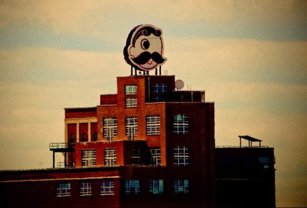

Seven Months Into Startup Life…Tell Me Again Why I Haven’t Been Blogging About It?
Yep…dead giveaway with the title. I’m starting my eight month at Contrast Security this week. It’s been pretty hectic, fun, tiring, all-consuming. Is there another word to describe that startup life has basically taken over my life, my wife’s life and even my kids’ lives. I wouldn’t trade it for the world. I figured I would use this blog to catch-up my precious readers of what’s going on.
Hiring Some Great Talent
I waited a few months before I brought in former colleagues shared a lot of my technical and business ideology. I think it was the right thing to do as i established some credibility with my team and formed a good foundation with the team. I did nonetheless bring in some excellent colleagues who worked with me in the past. So far I’ve brought four members from the past teams, as well as two other colleagues from other companies that I valued for their hard work and dedication.
I really should start by saying I really inherited great talent. The folks on my team that were with Contrast when I joined in September were/are very talented. Who says technical talent can exist out of Silicon Valley? I can attest after 15 years in the business that great tech talent can be found all over the world. Keep an open eye and an open perspective…then you will find them.
Move to AWS…It Really Will Make a Difference
The best part about technology is ubiquitous access. Nearly all of our technology that we use and build is cloud-based. In fact, it’s 100% cloud based. I don’t think I would ever want to host technology again given what I know today about costs, management and simplicity.
Right now we are about 30% Atlassian Cloud, 30% AWS cloud, 30% Firehost Cloud and the remaining 10% at various point technology clouds like Office 365, New Relic and Balsami (yes…Balsamiq has a SaaS version of their product). Our goal is to make our AWS investment over 60% of our cloud by summer. Shocking that Amazon still isn’t profitable.
Building an Office
It’s been a long and tireless effort to get us an office space. We started looking at building a space, but settled on a great location in an even cooler building at the Natty Boh Tower in Canton.
Both co-founders live in Baltimore near me. They have opinions about what they want. I have to say, I really agree with every opinion they have. The opinions kind of vary from our CEO’s opinion btw…He’s out in Palo Alto, the mecca of startups and tech companies. He outfitted a spacious open floor plan in Palo Alto’s industrial district. He was able to get furniture for like 10 cents on the dollar. No such luck in Baltimore. It’s hard to get nice furniture on a dime in Baltimore in bulk.

Don’t get me wrong, you can find items here and there. To find one dozen desks, some chairs and a few conference rooms worth of goodies, is tough unless you make huge compromises like going to Ikea, or somehow stumble across the goose the laid a golden egg.
We were lucky. We found the amazing people over at Hyperspace to help us outfit our furniture. They’ve been great…I gave them a budget and they managed it to a tee.
We haven’t moved into the space yet. We get the keys on Friday, May 1st. We haven’t settled on our furniture either. I’m hoping that happens this week. Once we move in, I’ll be sure to post some pics of the place…